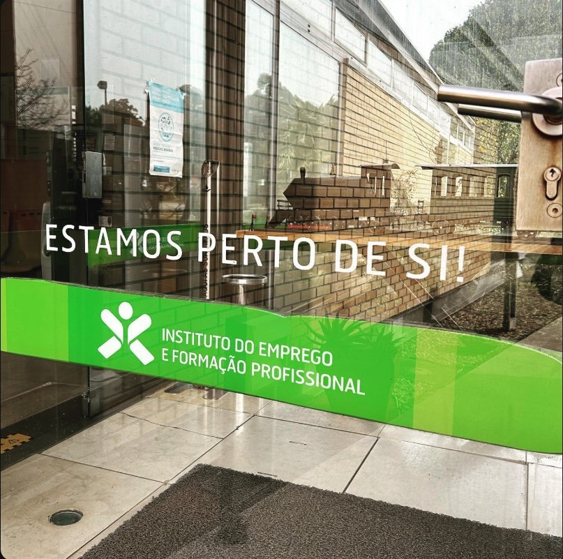
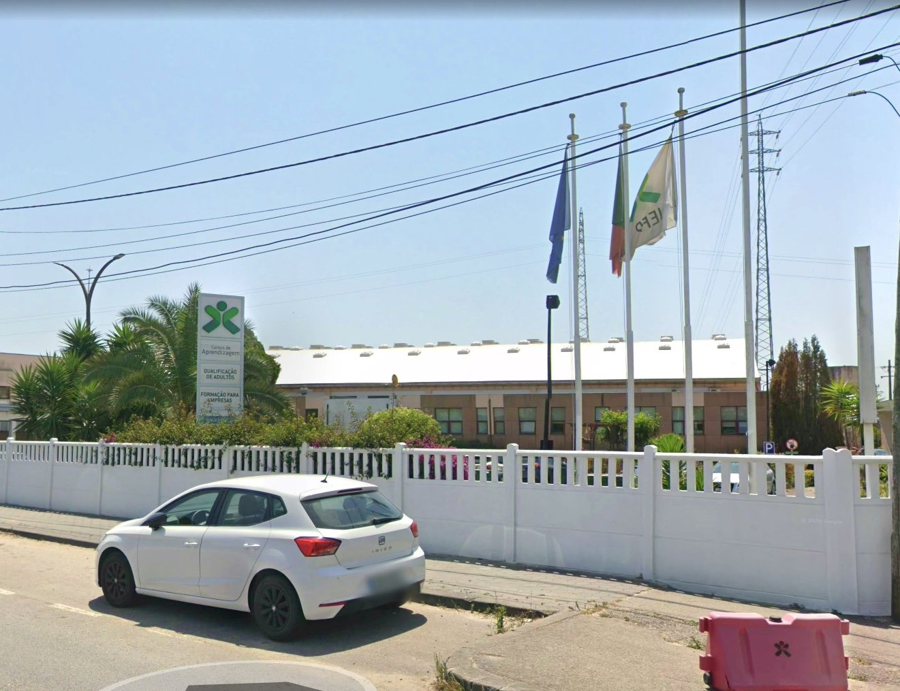
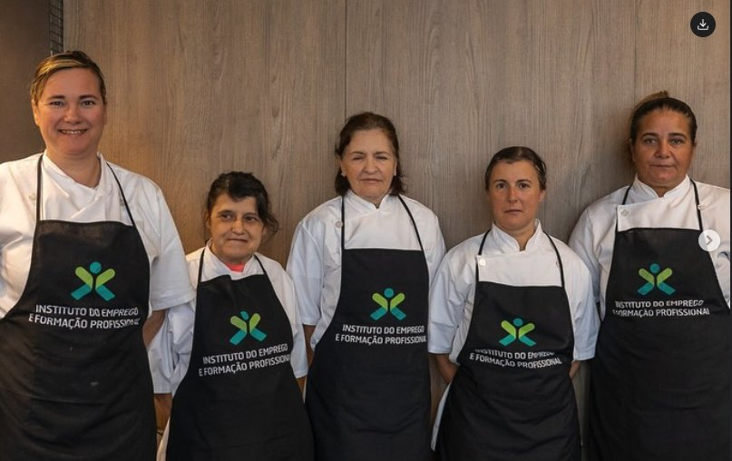
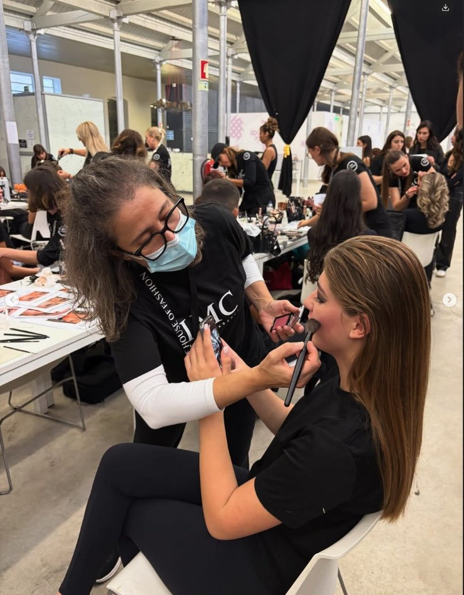
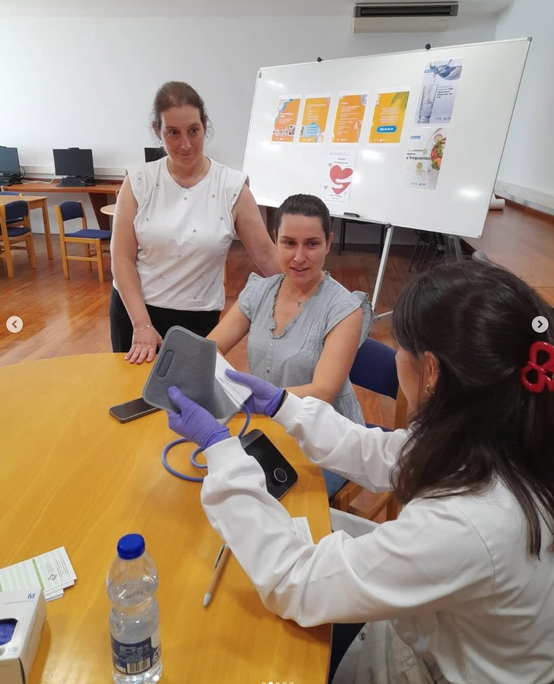

01 / CRIATIVIDADE
01 / CRIATIVIDADEBELEZA E BEM-ESTAR
Cabeleireiro
Aprende técnicas, desenvolve a criatividade e explora a prática profissional.
Duração: variável conforme a ação
Saber maisIEFP RIO MEÃO FORMAÇÃO PROFISSIONAL
Um lugar para descobrir capacidades, desenvolver competências e criar novas oportunidades.
01 / APRENDER É TRANSFORMAR

RIO MEÃO / PORTUGAL01 / O CENTRO

UM ESPAÇO DE POSSIBILIDADESO IEFP promove a qualificação profissional e apoia a integração no mercado de trabalho. Nesta proposta, o centro de Rio Meão é apresentado como um espaço de aprendizagem, partilha e desenvolvimento de competências.
A nossa ideia é simples: tornar mais fácil descobrir percursos formativos e aproximar as pessoas de novas oportunidades.
Falar connosco02 / OFERTA FORMATIVA
Quatro áreas para explorar. Exemplos de percursos formativos, sujeitos a confirmação junto do IEFP.
01 / CRIATIVIDADEBELEZA E BEM-ESTAR
Aprende técnicas, desenvolve a criatividade e explora a prática profissional.
Duração: variável conforme a ação
Saber mais
02 / SABORESHOTELARIA E RESTAURAÇÃO
Descobre técnicas de preparação, organização e trabalho em equipa.
Duração: variável conforme a ação
Saber mais
03 / EXPRESSÃOESTÉTICA E IMAGEM
Conhece práticas de cuidados pessoais, técnicas e atendimento.
Duração: variável conforme a ação
Saber mais
04 / CUIDADOSAÚDE E APOIO
Explora competências de acompanhamento, prevenção e cuidado.
Duração: variável conforme a ação
Saber maisNota: nomes, descrições e durações são exemplos académicos. A disponibilidade e as condições de cada formação devem ser verificadas nos canais oficiais do IEFP.
Área ligada à criatividade, à imagem e ao atendimento. Consulta o IEFP para conhecer ações e requisitos.
Área ligada à preparação de alimentos e à organização de serviços de restauração.
Área dedicada a técnicas de imagem, bem-estar e cuidados pessoais.
Área orientada para competências de apoio e acompanhamento em contextos de cuidado.
03 / VIDA NO CENTRO
Um olhar sobre atividades, experiências e momentos de aprendizagem.

Experiências práticas e contacto com ferramentas ligadas à comunicação e à tecnologia.

Atividades que aproximam a expressão artística e o desenvolvimento de competências.

Encontros e iniciativas que dão visibilidade ao percurso de quem aprende.
Destaques editoriais ilustrativos baseados nas imagens fornecidas. As datas e os detalhes dos eventos não foram confirmados.
04 / EM IMAGENS
Desliza para o lado para explorar os momentos do centro.

05 / CONTACTOS
Queres saber mais sobre as oportunidades de formação? Consulta os canais oficiais do IEFP.
Visitar o site oficial do IEFPEste website é um projeto académico e não representa um canal oficial de contacto.